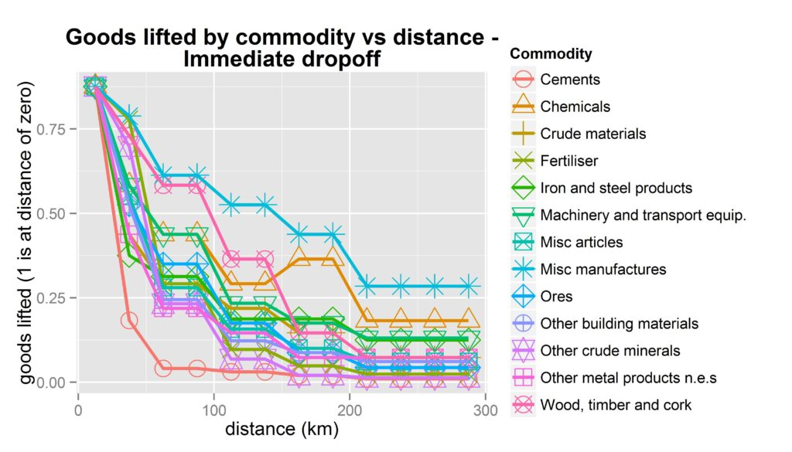
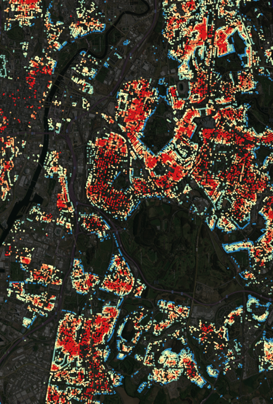
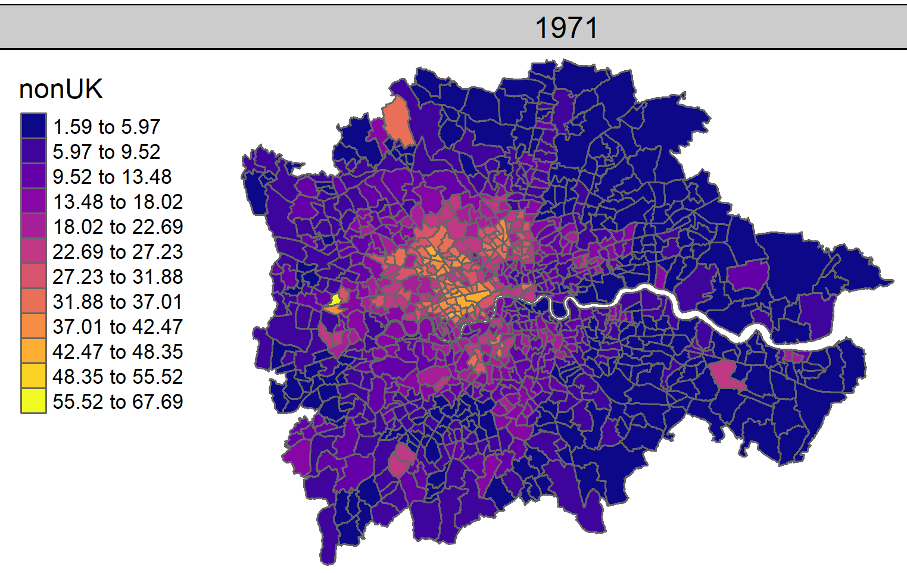
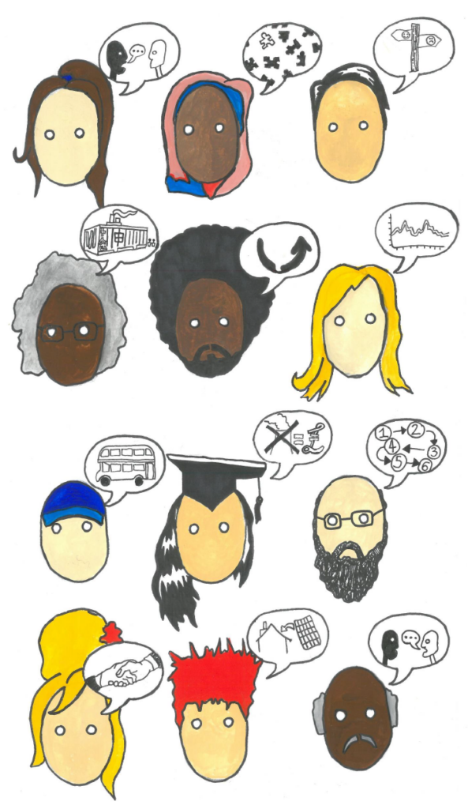
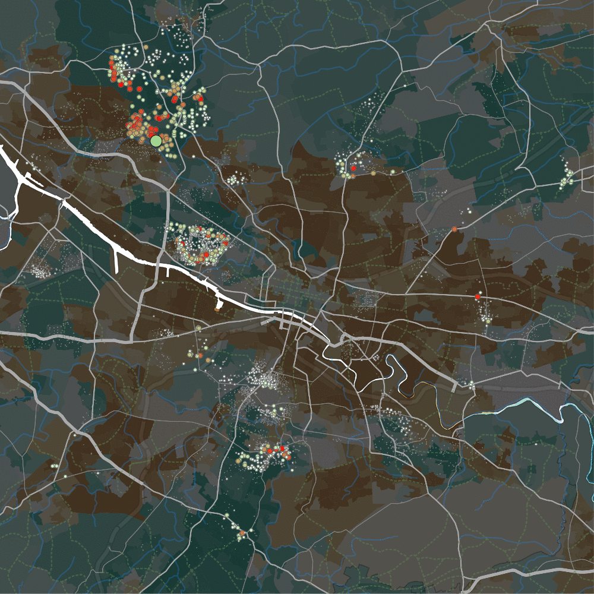
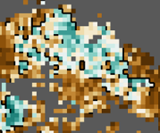

Dr. Dan Olner
Data scientist / geospatial analyst / political + spatial economy / climate / researcher / writer
Y-PERN policy fellow, University of Sheffield / South Yorkshire Combined Mayoral Authority (SYMCA)
danolner at gmail dot com / d dot olner at sheffield dot ac dot uk. Github. Github blog. Bluesky. LinkedIn.
About
- I love collaborating with people to build things, creatively applying appropriate methods/technologies, thinking about the whole picture (often spatial economics / political economy related) and using data viz / writing to communicate.
- Complex technical challenges are the best thing, especially if they involve geography.
- I want to contribute to building thriving regions and a stable, zero-carbon biosphere. “The point is to raise up our humanity. Imagination and hope will be our twin guides.” (Roberto Unger)
- Writing is thinking. See below for topics I write on.
Writing
Writing (and reading) is a very special part of being human. As well as my academic / technical / report stuff, I write about a range of topics (see the archive selection below) and have also written a near future sci-fi book called “The Ink that Draws the Maps” (nice to get geography in there!) It’s currently being rejected by agents, so most likely self-publishing soon. More info on the book here.
Writing community has become essential to me. I’m part of Sheffield’s wonderful Writers’ Workshop and Lisa Munro’s more American-leaning group (without which the sci-fi book would never have been finished).
Projects
Regional Economic Analysis in South Yorkshire

Regional economic analysis in South Yorkshire as part of working with Y-PERN
- Worked as part of a team on SYMCA’s Plan for Good Growth and Skills Strategy, published Spring 2024.
- Sector analysis 3-pager here; deeper look at code and data including walkthroughs here. Stuff I think about the power of open data, including data/code, here.
- Trying to make accessing / analysing / visualising slightly tricksy but amazing data easier. For example, turning ONS business data into accessible reports. (Wrangling issues discussed here.)
- Collecting links to open code and data for several related reports / analyses on the github blog.
- Work continues as new government and regions try to arrive at refreshed local growth plans and a national industrial strategy that all make sense together.
- Co-organising a SYMCA / Y-PERN policy forum to bring together policymakers and experts around topics – writeup of first session here.
- Thinking about how to strengthen the glue between university work and policy in the region. This post by SYMCA’s assistant director of growth, business and skills reflects on what works (and doesn’t!)
Re-wiring the Spatial Economy for Zero Carbon

Re-wiring the spatial economy for zero carbon: how will it impact the UK’s regions and industries, and what energy justice implications could it have?
- Built a model of scenarios for possible future changes in UK internal trade flows due to distance cost change and its knock-on effects.
- Mostly, the results demonstrate that spatial economics and distance still matter, and matter more than ever given the transition challenge we face (see paper link below for specific geography/industry effects).
- Data: UK input output flows, made into spatial flows by linking to the Business Structure Database; UK regional transport data to estimate how trade drops off over distance internally (it does, strongly – see image).
- Technologies: Stata for the main model (for reasons), R and ArcGIS for visualisation
- Paper: “The spatial economics of energy justice: modelling the trade impacts of increased transport costs in a low carbon transition and the implications for UK regional inequality” (Olner, Mitchell, Heppenstall, Pryce) in Energy Policy (2020).
- Submission to the UK2070 Commission here. Visualisation of trade/money flows here.
Do Windfarms Affect House Prices in Scotland?

Do windfarms affect house prices in Scotland? A project for ClimateXchange Scotland, with Gwilym Pryce, Stephan Heblich and Christopher Timmins.
- Accounting for building heights and landscape, I built a line of sight framework for identifying which properties in Scotland can see wind turbines and drafted the report. The framework was used to statistically search for any house price affect (we didn’t find one).
- Bespoke Java program for the main line of sight model / Python in QGIS / R
- This presentation goes into more detail, explains all the data sources, has many pretty maps and shows how the line of sight model was also used to identify green space visibility (e.g for Glasgow, image on right – redder can see less green space, blue properties can see more, hence blue edging around parks).
A Tale of Two Countries

A tale of two countries: a data story tool for examining changes in English inequality using the index of multiple deprivation.
- Aim: an online interactive tool, with a built-in story that guides users through inequality shifts from 2015 to 2019, and how to use the tool to compare deprivation in different local authorities.
- D3 / Javascript / R (see the blog post for more info).
Harmonised UK Census Data 1971-2011

Harmonised UK Census data 1971-2011: A project to make consistent geographies and categories over five Censuses for Great Britain and Scotland, for a few key variables.
- Developed a method to combine some wards to overcome a disclosure issue in the original Census data, producing a bespoke consistent geography (as well as harmonising changing variable categories over the decades).
- The GIF on the right: non-UK-born, change in London from 1971 to 2011.
- Used in “Estimating the Local Employment Impacts of Immigration: A Dynamic Spatial Panel Model” (Fingleton, Olner, Pryce) Urban Studies (2020). Somehow, that journal’s most downloaded article ever.
Systems not Lightbulbs

“Systems not Lightbulbs: building pathways to zero carbon in higher education”
- A practical guide to building zero carbon in higher education, developed with the team at Sheffield Carbon Neutral University, originating in an event we organised.
- I was a member of the event and guide team, co-writing and designing the layout, in consultation with Celia Mather.
- Contains ideas and tools for movement-building, strategic thinking for senior leaders, ways to engage with management and methods for prototyping and scaling up.
- Includes case studies of Edinburgh University’s Zero by 2040 strategy and Solar SOAS.
- Illustrations by Eliot Robinson.
3D Geographical Data Prints
- Used for communicating Census and other variables to members of the public and public sector workers (also discovering these were useful for blind people to interact with data).
- This one is violent crime in Rotherham. (Town centre Friday night peak explains the huge data skyscraper.)
House Price Moves in Glasgow

How are house price moves linked across space? Visualising the network of linked house price movements in Glasgow.
- An example of how bespoke data visualisation can reveal otherwise invisible dynamics. (Blog post linked above for full discussion.)
- Underlying data (produced by Nema Dean): a matrix of correlations for house price moves over a 3 month period for every postcode pair in Glasgow – do prices move in tandem in separate spatial locations?
- Visualisation: not only do they move together, there are underlying spatial patterns of how those movements change across distance (see blog post). And also, there are completely separate market areas; the GIF shows correlated price movements for postcodes on different sides of a canal that separates a more and less deprived area (green circle, top left).
- Java/Processing for the interactive visualisation; R for data wrangling.
PhD Research

PhD: “an agent-based modelling approach to spatial economic theory.”
- As Paul Krugman has pointed out, geography and distance mess with traditional economic methods so much that the most common approach is to pretend they don’t exist. A consequence of this: quantitatively assessing the impact of spatial economic changes due to zero carbon transition is not something we have the tools for.
- Predictably, the PhD didn’t solve this massive issue – instead, it used agent-based modelling (and an exploration of economic history) to dig into the theoretical guts, finding a novel way to explore spatial economics that could produce versions of other models like urban Alonso Muth Mills style (image on the right; paper in Computers Environment & Urban Systems here) and Krugman’s core-periphery model.
- I built an interactive modelling framework in Java for the PhD. It had some lovely outcomes I should have caught on youtube.
- I did catch one outcome on video: the time I accidentally made some kind of predatory life form. Those are cities, in theory. Agents in the green blob (city dwellers or possibly body cells) prefer a mix of goods; the red blob agents are happier with a single good. That uncanny appearance of intention is maybe not accidental: optimising costs is a central part of nature. (Also see blog post on the nature of intention.)
- The PhD actually started off as: “Can agent-based modelling help shed light on the possibilities for steering self-organised systems like the economy? Can it help robustly question assertions by e.g. Hayek about the semi-religious awe we should hold for the price system?” This is the old blog “about” page explaining the original idea. Several other posts in the archive outline below talk in more depth about this. Also, turns out someone else did that PhD.
Teaching: R Workshops and Quantitative Methods

- I have taught several R workshops to PhD students and public sector workers introducing the principles of wrangling and visualising data in R, as well as one workshop for Sheffield’s R users’ group introducing R for spatial analysis, where we made a pub crawl optimiser that accounted for Sheffield’s hilliness (the group meets in the Red Deer pub, so seemed appropriate).
- I taught a 1st year undergraduate module introducing quantitative social science at Sheffield Methods Institute, Sheffield University. Students learned R programming, regression modelling and a range of other social science quant ideas including reproducibility, causal inference and geospatial analysis.
Additional Creative Projects
- Abstract model of migration entropy (R)
- 3D visualization of London house prices (1995-2016)
- Random walk visualization for uncertainty communication
- Motion detection system for interactive art (Java/Processing, Kinect)
- QGIS-based “hallucinogenic maps”
Writing Topics & Archive
Economic & Systems Theory
- Adaptive landscapes and human organization systems
- Stafford Beer’s Cybersyn and economic design
- Economic reform vs. revolution debates
- Pareto optimality and welfare comparisons
- Price system emergence and self-organization
Geography & Spatial Economics
- Cars’ role in urban form transformation
- Containerization’s impact on port cities
- Value density in logistics and spatial economics
- Internet monopoly parallels to physical space
Methods & Visualization
- Differences between data visualization types (boxplots vs. x-rays)
- Visualization for comprehension vs. communication
- Statistical methods and their explanatory limits
Climate & Environment
- Climate change’s ideological entanglement
- Crop genetic modification and public research
- Zero-carbon transition challenges
Philosophy & Emergence
- Language as pheromone trail vs. logic machine
- Intention in emergent systems
- “Cargo cult” thinking in systems design
- Productive stupidity in research
Food Systems & Global Justice
- Pharmaceutical production and open-source models
- Workers in supply chains
- Seed production and agricultural control
Social Frontiers in Rotterdam

Finding “social frontiers” in Rotterdam and exploring how they affect household mobility